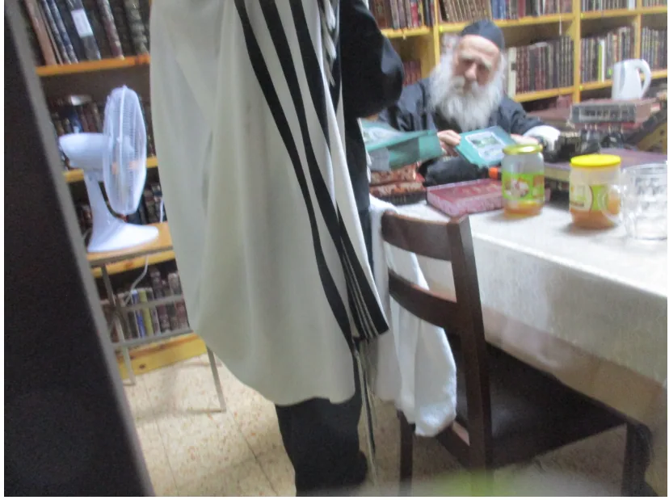

ביום שני ז' אייר תשפ"א נכנסתי לפני כ"ק האדמו"ר ממאקווא שליט"א והראתי לו את החוברת שהוצאנו – ונטעתם – מצוות נטיעת אילנות בארץ ישראל.
האדמו"ר נהנה מאוד, במיוחד מהסיפורים הנפלאים על האדמו"רים שדאגו לגינת נוי בארץ ישראל (בעל'ז, סלונים, ויזניץ, ועוד) לזכות לקיים מצוות נטיעה ומצוות שביעית.
מרוב שמחה ביקש כ"ק האדמו"ר ממאקווא שליט"א לקנות 10 חוברות לחלק לחסידים, ואף שילם סכום גבוה במיוחד בחביבותו העצומה למצווה גדולה זו.
כעבור יומיים ביקש האדמו"ר שליט"א לקנות עוד 10 חוברות לחלק לעוד ועוד יהודים.
זוהי זכות גדולה החוברת הזו, והאדמ"ר רצה לזכות בה הרבה הרבה יהודים.

האדמו"ר מחזיק בחוברתמכתב שכתב מחבר הספר עץ השדה
קול רננה נשמע בחוצות ירושלים,
בהופעת הקונטרס הנפלא 'ונטעתם',
דבר בעיתו בפרשת השבוע העוסקת בזה ושזה המקור לזה,
אשריכם ויישר כוחכם,
בהודאה, הערכה והתפעלות,
ובברכה להמשך הלאה כהנה וכהנה.
בנוסף להתפעלות מהספר,
בעז"ה איעזר בו בעתיד בנושאים אלו בס"ד וב"נ
תזכו להפיץ עוד דברים כהנה וכהנה